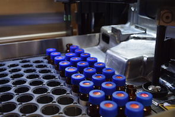

Clinical Toxicology
We specializes in the analysis of designer drugs using high resolution and tandem mass spectrometry
to aid Poison Centers, Medical Examiner Offices, and various government agencies including the
Drug Enforcement Administration, the Centers for Disease Control and Prevention,
the National Institute of Occupational Safety and Health, and the National Transportation Safety Board
in tracking down synthetic drug intoxications and epidemics.

Environmental Biomonitoring
The lab primarily serves as an analytical core to the Program on Reproductive Health and the Environment (PRHE)
as well as other biomonitoring groups within UCSF and other universities and research institutions in the United States and Europe.
Under this capacity, the laboratory is pioneering the application of high resolution mass spectrometry
to the general suspect screening of environmental chemicals in biological matrices. In working with various biomonitoring groups,
the laboratory has also continuously developed innovative and sensitive liquid chromatography-mass spectrometry (LC-MS) methods
for measuring environmental chemicals (e.g. environmental phenols such as BPA, BPS and triclosan; phthalate metabolites; perfluorinated compounds; and flame retardants) in a variety of biological matrices including serum, urine, amniotic fluid, placenta, hair, and various other human tissues.